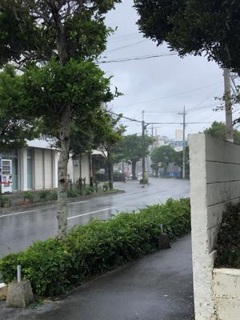
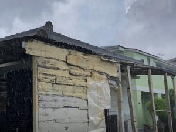
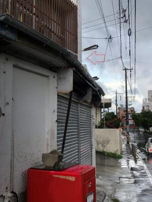
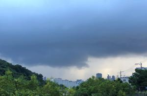

うるがいの話 ある日
最新: マスク着用
うるがいとは 前提知識です
カニの画像をクリックすると『うるがいの話』サイトを表示します
うるがい(ｳﾙｶﾞｲ urugai)とは、『もずくがに』の名前でとても大きくなります。
たながー（ﾀﾅｶﾞｰtanagaa）とは手長えびのことで、何種類かあり大きいのは車 エビぐらいになります。
ぶながー(bunagaa)とは、赤い髪の毛、赤い身体、そして身長は１ｍ２０ｃｍ ぐらい、川の蟹を食べているの目撃された。場所は沖縄県国頭郡大宜味村のと ある村僕の隣近所に住んでいる爺さんから、聞いた話です。
2021年09月15日 (水）
マスク着用
17:37




コドモが家に来る。家庭内感染を避けるため、マスクを着用する。帰った後は
ヨメはアルコール消毒をする。とにかく、マスク着用なのである。今日、『石
垣市議会 石垣亨氏 マスク着用「効果なし」ワクチン強要にも異論』のニュ
ースが載っていた、ん！、昨日は『北海道白糠町の町議員がマスクを着用せず
議会に出席した』ニュースをお昼のバラエティー番組で見たばかり。ドラマ「
大地の子」を見終えた今、中国共産党が強いる中国の発展が分かる。『ジャパ
ン・アズ・ナンバーワン』と言われ、ドラマの中の『日中共同の製鉄プラント
事業』が完成する頃（１９８６年）は、ＮＨＫのラジオから中国の製造技術は
全然話にならない！といった文化放送を聞いた。オフショア開発（情報システ
ムやソフトウェアの開発業務を海外の事業者や海外子会社に委託・発注するこ
と）やパソコンの製造など、ハードウェアやソフトウェアの技術移転を進めて
今に至っている。台風１４号は変な動きをしている、地球温暖化による異常気
象が頻発していると気象庁が説明していた。二酸化炭素排出量の最も多い中国
真剣に減らす気配はない。と、おかしな気候のためか、通り雨にやられたせい
もあり、マスクから尖閣諸島問題からダントツ嫌いな国と中国共産党への憤り
を書いてしまった。ところで一時期、マスクを買うのが大変だったが、薬局で
はまた安い中国製が出回っている。一応、私どもは日本製を選んでいる。おっ
と、どうみても今回のコロナは中国から発生していると思うが。